- base: 4.5.1
- methods: 4.5.1
- datasets: 4.5.1
- utils: 4.5.1
- grDevices: 4.5.1
- graphics: 4.5.1
- stats: 4.5.1
- ggplot2: 4.0.2
- ggrepel: 0.9.6
- midr: 0.6.0
- midnight: 0.2.0
- khroma: 1.17.0
- MetBrewer: 0.2.0
- RColorBrewer: 1.1.3
- viridisLite: 0.4.3
- dplyr: 1.2.0
- gapminder: 1.0.1
- rnaturalearth: 1.2.0
- fmsb: 0.7.6
- ISLR2: 1.3.2データの可視化
Tokyo.R #120
2026-04-18
使用パッケージ
ggplot2 パッケージを使おう
- 探索的な可視化は、そのデータを理解するための第一歩
- ggplot2 は探索的な可視化に最適なパッケージ
- 多彩で柔軟な表現が可能
- ggforce、patchwork、gganimate などの拡張パッケージも豊富
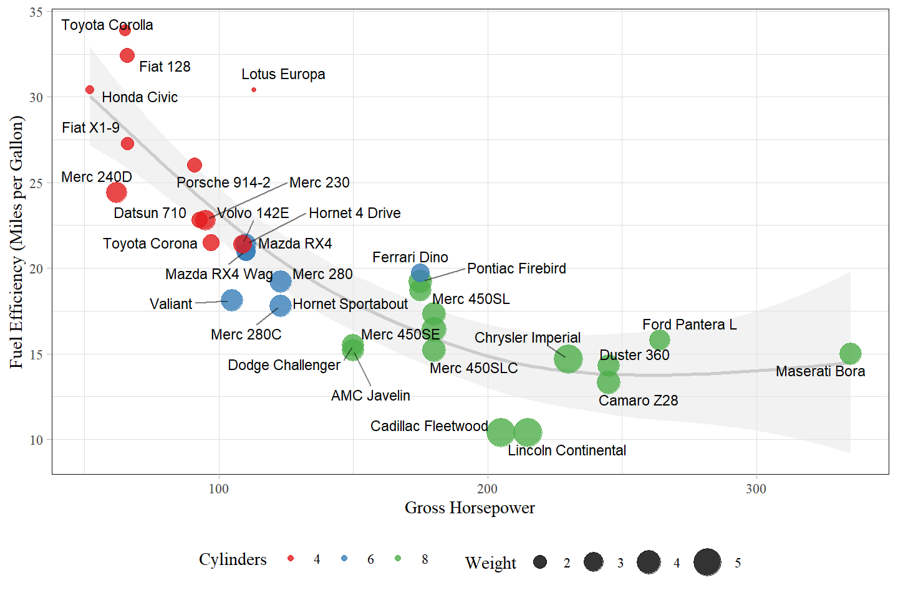
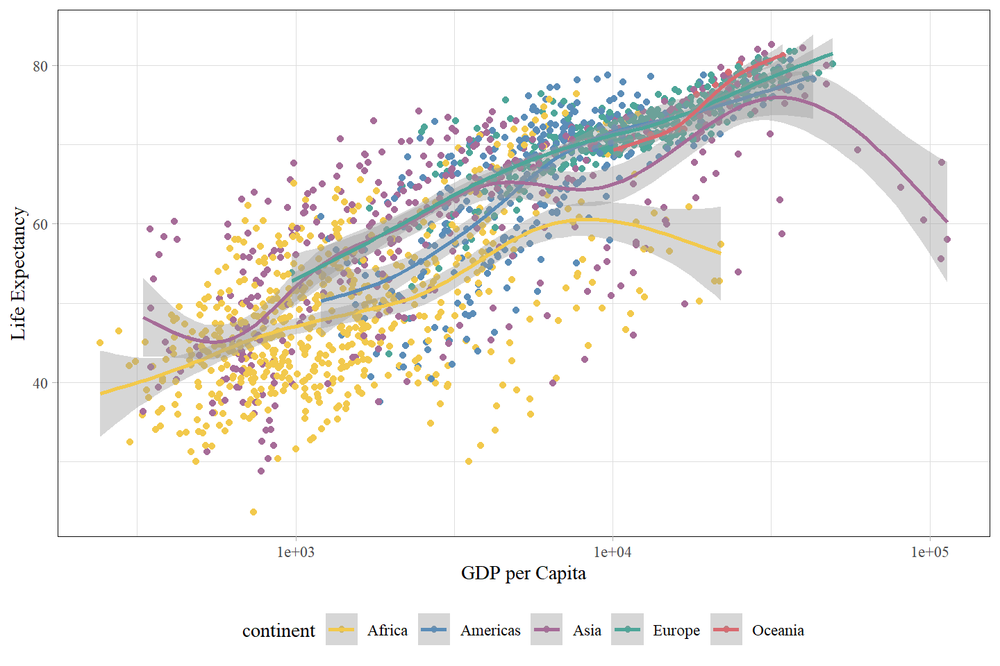
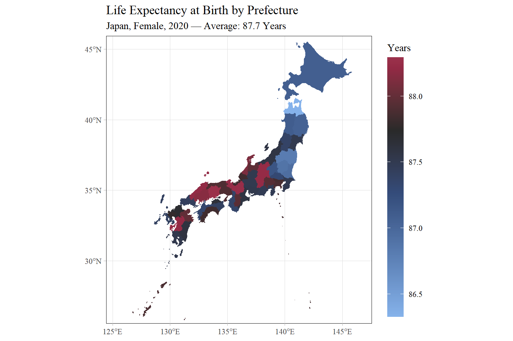
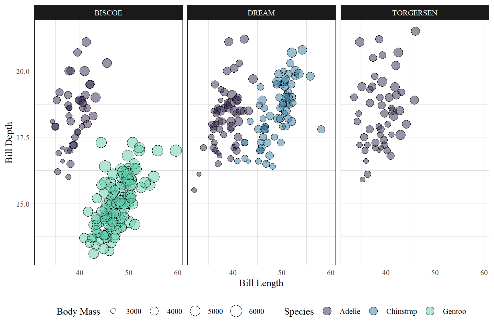
The Layered Grammar of Graphics
プロットを、散布図や棒グラフなどの典型的パターンではなく、抽象的な構成要素からなる Layer（層） として構築する理論
Defaults: プロットで共通して用いる基盤。データ (
data) と審美的属性の対応付け (mapping) を含む。Layer: プロット図形的要素 (
geom) 、統計的変換 (stat)、配置 (position)Scale: データの値を、位置・色・サイズなどの審美的属性に変換
Coord: 位置を描画領域に対応付ける座標系
Facet: データの分割表示方法
理論と短縮関数
厳密なコード表現
実際のコード (短縮関数)
内部でデフォルトの stat や position を補完している
散布図と度数グラフ
散布図 (geom_point)
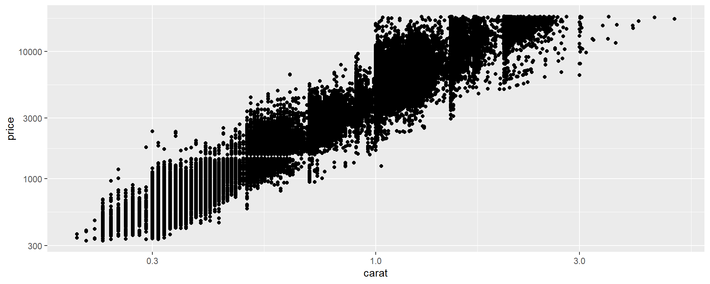
度数グラフ (geom_bar)
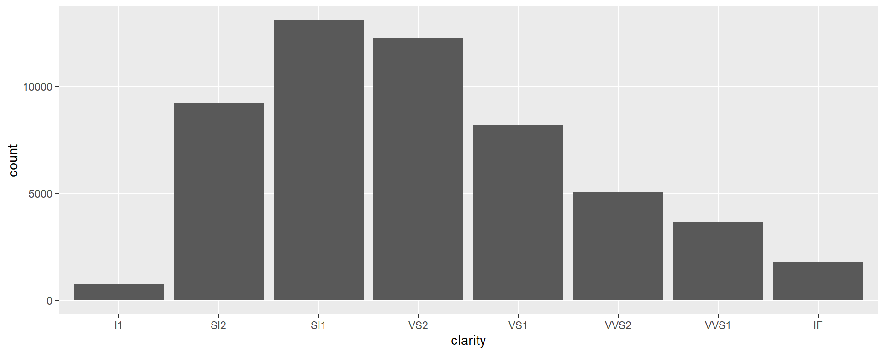
ヒストグラムと密度曲線
ヒストグラム (geom_histogram)

密度曲線 (geom_density)
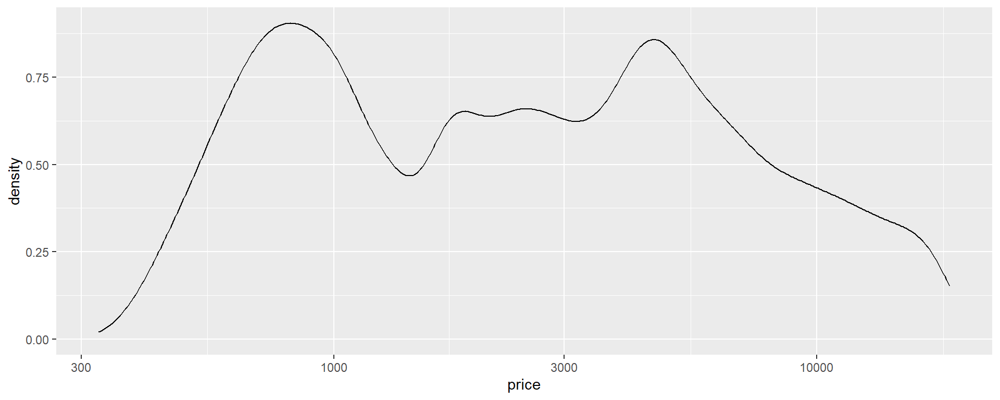
データの構造を色にする
色は人間の視覚に最も強く訴えかける要素。 データの性質に即したスケールを選ばないと、解釈を歪める原因に。
3つの基本パレット
- Qualitative (質的)
- Sequential (順序)
- Diverging (発散)
1. Qualitative: 質的カラーパレット
順序や大小関係がない配色。因子型変数の塗り分けに。
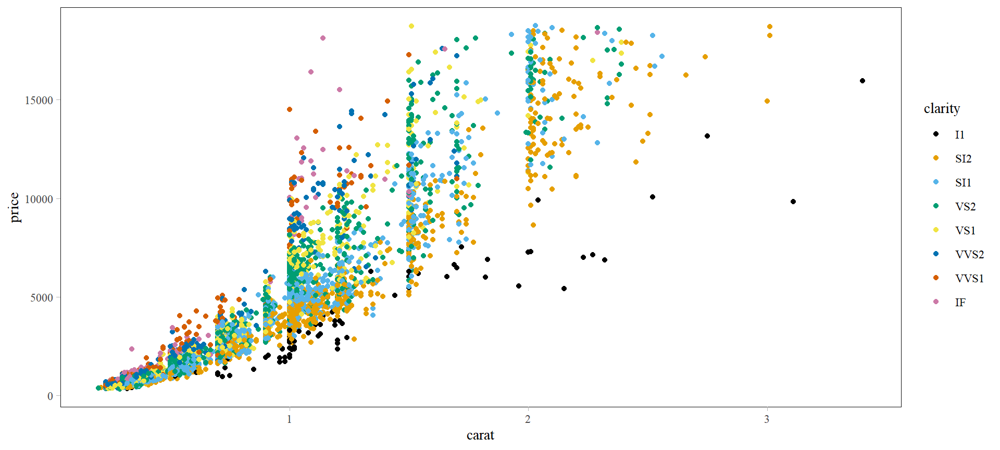
- Okabe-Ito: カラーユニバーサルデザイン
- HCL: 視覚的平等を保つ設計
paletteer パッケージ
scale_color_paletteer_d() などを使えば、R上の無数のパレットを統一インターフェースで呼び出せます。
2. Sequential: 順序カラーパレット
明度や彩度が連続的に変化。一方向に増加する数値に。
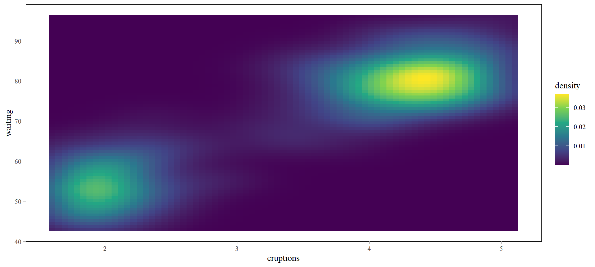
- Viridis: 数値の変化と視覚的変化が一致するように数学的に設計。
3. Diverging: 発散カラーパレット
基準値（ゼロや平均値）を中心に、両極端へ向けて濃くなる配色。
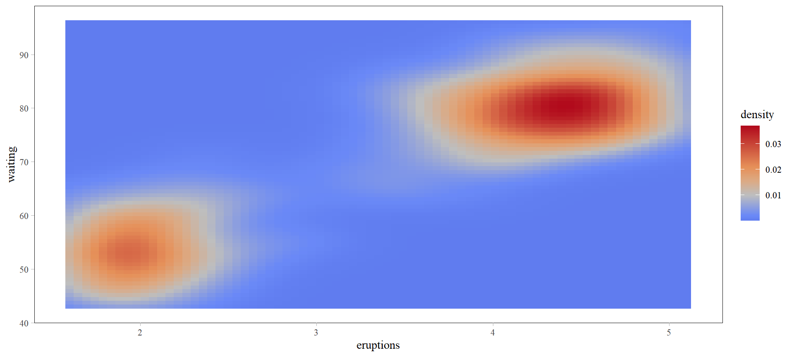
- Red-Blue: 直感的でポピュラーな発散表現。
Storytelling With Data
識別のための配色から「強調」の配色へ
- 探索的フェーズ: データの全容を把握（識別性）
- 説明的フェーズ: 伝えたいメッセージを強調
主役以外の部分をグレーアウトし、視線を誘導する。
説明的な可視化の例
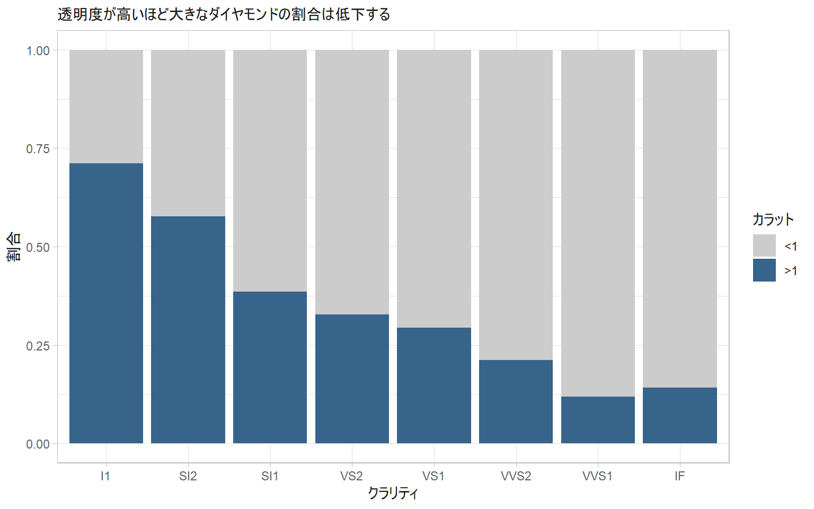
Note
条件を満たすデータのみを色付けするなら gghighlight パッケージも有効です。
Enjoy !!
ggplot2 はデータから柔軟にプロットを作り上げるための最強の道具です。
レイヤーの骨格と、構造に合致したカラーパレットで、 データの理解を深める可視化を！
References
- ggplot2 Extensions: https://exts.ggplot2.tidyverse.org/
- All Your Figure Are Belong To Us: ギャラリー
- Storytelling With Data - ggplot: Cole Nussbaumer Knaflic のプロット再現
- Hadley Wickham 論文: A Layered Grammar of Graphics (2010)